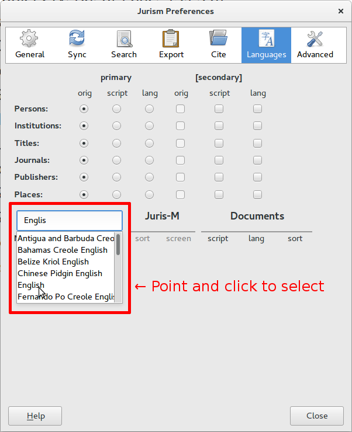
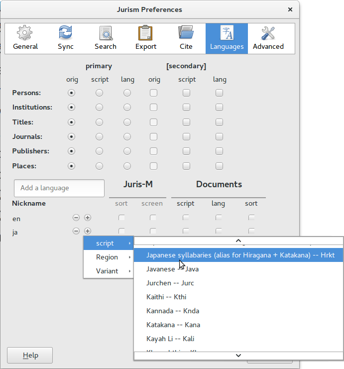
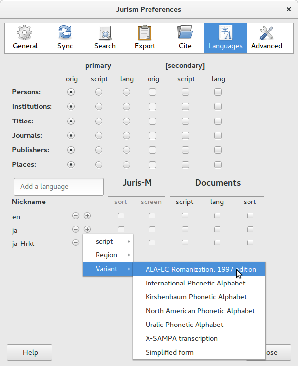
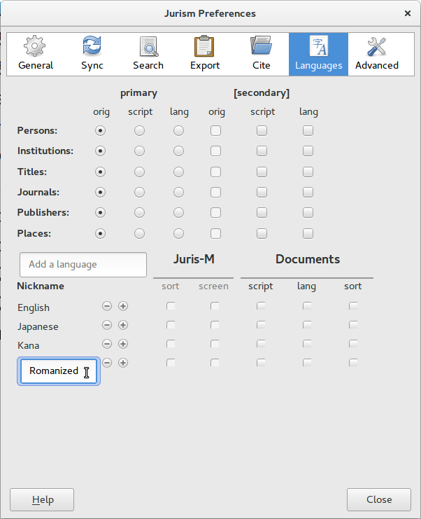
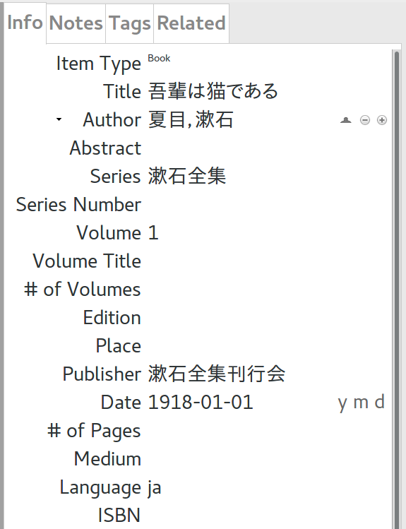
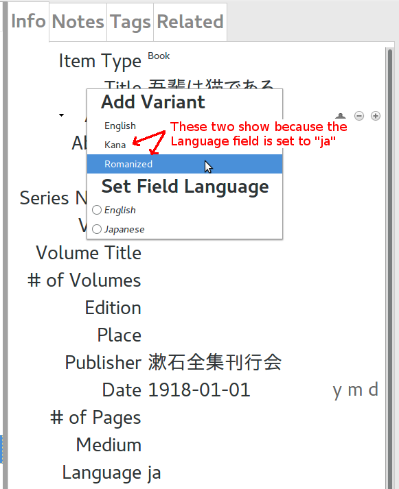

Multilingual records in Jurism
Multilingual records in Jurism
${toc}
🔗 Introduction
Jurism is able to store records with multilingual variants (translations or transliterations) of names and the major text fields. This post explains how to configure a multilingual environment in Jurism and edit records with language variants.
🔗 Setup
When Jurism is first installed, it is not “aware” of variant languages
or scripts. To configure for multilingual operation, visit
Preferences → Languages, and type a language name in the input
box that says Add a language. This will open a pulldown menu as
shown below. (Note that, due to a small bug, you currently need to
click on a menu entry to select it, pressing Enter does not work.)

To add transliterations for a language, click on the (+) symbol next
to it. There are several options for sub-variants. For most script conversions,
select script and scroll to find the appropriate script.

Romanization is a special case. Because a script conversion to the roman alphabet is not a simple one-to-one mapping for most languages, the rule set should be indicated. Mainstream rules for romanization are set by a project of the American Library Association and the U.S. Library of Congress known as “ALALC-97.” This is listed in the Variant menu:

To give your language variants more friendly names, click on the code for each in the leftmost column, and enter a descriptive name for it, and press Enter.

🔗 Item language
While it is not required, Jurism will work most smoothly with multilingual content
if the Language field is set to the two-character ISO code of the primary language
of the item. Let us take a Japanese entry as an example, for which the ISO code is ja:

🔗 Headline field language settings
We will refer to fields that show before variants are added as “headline fields.” In our example, the headline Title field value is 吾輩はねこである. To add variants to this field, place the cursor over the field label and right-click. This shows the available variant language options. Note that transliteration options show only for the headline field’s own language, which defaults to those appropriate to the language set in the Language field.

Selecting an option under the Add Variant heading adds a field pre-populated with the headline content. Press Backspace to clear the field and enter the appropriate content. Then press enter to close the field and save the item.

🔗 Conclusion
The sections above cover the basic operations for setting up multilingual support in Jurism and manipulating multilingual records. If you have questions, feel free to post queries to the Jurism support list.